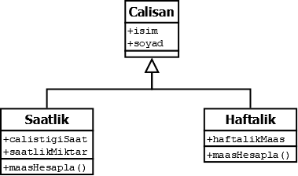

Sınıflar, bir veya birden çok ortak özellikleri olan nesneleri tanımlamaya yarayan bir kümedir. Sınıflar aynı zamanda programlarımızı özelliklerine göre parçalara ayırmaya ve karmaşıklığı azaltmaya yararlar.
Mesela bir okuldaki öğrencileri düşünelim, okulun içinde öğrenciler vardır ve öğrencilerin ise kendine ait bilgileri vardır. Okulu bir class olarak düşünürsek, öğrenciler, bu classın bir nesnesi, öğrencilerin bilgileri ise özellikleri olur.
Sınıflar nerede kullanılır? Sınıflar, daha çok birden fazla kişinin üstünde çalıştığı büyük ve karmaşık projelerde kullanılır.
Sınıfların Tanımı ve Kullanımı
Tek nesneli basit bir classın tanımı:
class ogrenci: // SINIF
isim = "Alper" // ÖZELLİK
soyad = "Derman" // ÖZELLİK
vize = 65 // ÖZELLİK
final = 75 // ÖZELLİK
def hesapla(self):
return (self.vize * 0.4) + (self.final * 0.6)
alper = ogrenci() // NESNE
print(alper.isim+" "+alper.soyad+": ",alper.hesapla())
Not: Classlarda tanımladığımız fonksiyonların 1. parametresi self, classın kendisini temsil eden bir referans parametresidir ve "self" adını taşımak zorunda değildir, yerine istediğimiz adı yazabiliriz.
Birden fazla nesne tanımlamak için özel bir fonksiyon olan __init__() fonksiyonunu kullanacağız. __init__() fonksiyonunu özel yapan şey, class tanımlandığı anda otomatik olarak çalıştırılmasıdır. Her classın kendine ait bir __init__() fonksiyonu vardır. __init__() fonksiyonu, oluşturucu (constructor) olarak da bilinir.
Öğrenci sınıfından türemiş nesneler oluşturarak, vize ve final puanlarını hesaplayan bir programı yazalım.
class ogrenci: // SINIF
def __init__(self, isim, soyad, vize, final): // OLUŞTURUCU (CUNSTRUCTOR)
self.isim = isim // ÖZELLİK
self.soyad = soyad // ÖZELLİK
self.vize = vize // ÖZELLİK
self.final = final // ÖZELLİK
def hesapla(self):
return (self.vize * 0.4) + (self.final * 0.6)
alper = ogrenci("Alper", "Derman", 65, 75) // NESNE
atilla = ogrenci("Atilla", "Erdinç", 68, 82) // NESNE
print(alper.isim+" "+alper.soyad+": ",alper.hesapla())
print(atilla.isim+" "+atilla.soyad+": ",atilla.hesapla())
Erişim Belirleyicileri (Public, Private, Protected)
Erişim belirleyicileri, bir sınıfın içinde olan değişkenleri, fonksiyonları vb. dışarıdan veya içeriden erişilip erişilemeyeceğini belirten özelliklerdir.
Erişim belirleyicileri Python'da kullanabirlik bakımında 2'ye, ama diğer programlama dillerinde 3'e ayrılır, bunlar:
- Public: Sınıf dışından erişilebileceğini temsil eder. Classın içinde normal olarak tanımladığınız bütün değişkenler ve fonksiyonlar public özelliğine sahiptir.
- Private: Sınıf dışından erişilemeyeceğini temsil eder. Tanımlamak için değişkenlerin veya fonksiyonların adının başına 2 tane alttan çizgi
__ koyulur.
- Protected: Python'da karşılığı olmamasına rağmen diğer programlama dillerinde rastlayacağınız başka bir erişim belirleyicisi olan protected, sadece tanımlanan sınıfın içinden ve miras alınan alt sınıfın içinden erişebileceğini temsil eder.
Miras alma işlemi, tanımladığımız bir ana sınıfın bütün özelliklerini (constructor dahil) taşıyan başka bir alt sınıf oluşturmamızı sağlar. Kod tekrarını azaltmak için kullanılır.
Mesela bir şirketin çalışanlarını düşünelim. Her çalışanın pozisyonu aynı değildir ve maaşı aynı şekilde hesaplanmaz. Bu sorunu çözmek için her çalışanda olması gereken özellikleri (adı, soyadı vb.) ana sınıfta, haftalık maaş alan çalışanları alt sınıfta, saatlik maaş alan çalışanları ise başka bir alt sınıfta toplayabiliriz.

class calisan:
def __init__(self, isim, soyad):
self.isim = isim
self.soyad = soyad
class saatlik(calisan):
def __init__(self, isim, soyad, calistigiSaat, saatlikMiktar):
super().__init__(isim, soyad)
self.calistigiSaat = calistigiSaat
self.saatlikMiktar = saatlikMiktar
def maashesapla(self):
return self.calistigiSaat * self.saatlikMiktar
class haftalik(calisan):
def __init__(self, isim, soyad, haftalikMaas):
super().__init__(isim, soyad)
self.haftalikMaas = haftalikMaas
def maasHesapla(self):
return self.haftalikMaas
alper = saatlik("Alper", "Derman", 8, 38)
atilla = haftalik("Atilla", "Erdinç", 1500)
Not: super(), ana sınıfta tanımladığımız fonksiyonları, alt sınıftan erişebilmemizi sağlar.
Şimdi üstteki örnekte birkaç açıklama yapmamız gerekiyor. Söylediğimiz gibi miras alan alt sınıflar, ana sınıfın oluşturucusu (constructor) dahil herşeyi barındırıyordu. Peki neden alt sınıflar için ayrıyetten bir constructor oluşturduk?
Bunun sebebi alt sınıflara özel tanımladığımız özellikler (calistigiSaat, calistigiMiktar, haftalikMaas) yüzünden dolayı. Bu özellikleri eklemek için alt sınıfa özel oluşturucu tanımlamamız gerekti. Ana sınıfta tanımladığımız bilgileri (isim, soyad) almak için ise super() fonksiyonunu kullandık.